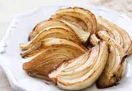

Roasted Fennel

Easy, quick, healthy roasted fennel recipe
This is a recipe for oven roasted fennel. Short, easy prep and a short cook time.
Ingredients
- Fennel bulbs
- Extra virgin olive oil
- Salt
- Pepper
Steps
- Heat oven to 400°F (205°C).
- Cut off fennel bulb stalks, cut in half lengthwise, then cut lengthwise into 1 inch wedges.
- Toss fennel with just enough olive oil for a light coating.
- Spread fennel out on baking sheet and place in oven to roast for about 40 minutes or until fennel wedges are cooked through and begin to carmelize at the edges.
- Taste and adjust seasoning with salt and pepper, if necessary, prior to serving.
Return to home page